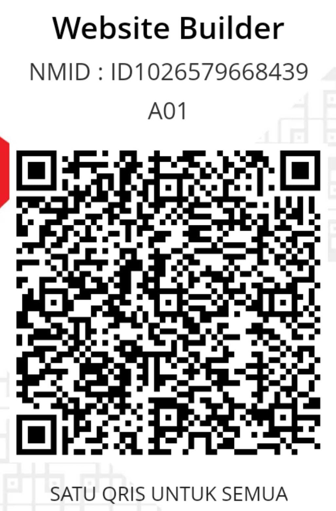

| R |
|---|
Suka pakai tracker ini pas nongkrong? Yuk traktir secangkir kopi buat developer biar server & fitur baru makin kencang! ☕

icons/qris.jpeg (atau .png/.jpg).
Punya ide fitur baru, lapor bug, atau mau curhat soal aturan Ceki? Tulis di bawah ini ya: